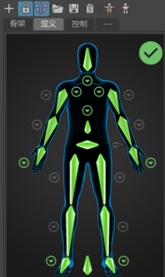

完成角色映射过程主要有两种方法，具体取决于是否为角色的骨骼使用标准命名约定。
对于这两种方法，您可以按如下方式做好准备：
- 加载骨架。在尝试创建定义之前，请确保已遵循为 HumanIK 准备现有骨架中的指导方针，并且已按照 HumanIK 角色结构中所述的内容对角色进行设置。
- 打开 HumanIK 窗口（“窗口 > 动画编辑器 > HumanIK”(Windows > Animation Editors > HumanIK)），然后单击“开始”(Start)窗格中的“创建角色定义”(Create Character Definition)。
- （可选）要重命名角色，请单击
 >“重命名角色”(Rename Character)。
>“重命名角色”(Rename Character)。
- 请选择下列方法之一来映射角色的结构：
手动映射骨骼
- 请执行下列操作之一以开始将骨骼映射到“角色”(Character)视图：
- 从“定义”(Definition)选项卡转到骨架：在“角色”(Character)视图中双击单元（单元在单击时将变为蓝色），然后单击场景中对应的骨骼。（例如，您还可以在“大纲视图”(Outliner)或“Hypergraph”中选择骨骼。）
- 从骨架转到“定义”(Definition)选项卡：选择骨骼，然后在“角色”(Character)视图中的相应单元上单击鼠标右键，然后选择“指定选定骨骼”(Assign Selected Bone)。
“角色”(Character)视图中的骨骼将变为绿色，以指示每个有效的骨骼指定。
有关哪些骨骼映射到哪些节点的详细信息，请参见 HumanIK 角色结构。
继续映射，直到定义完所有需要的骨骼为止。映射所有需要的骨骼之后，验证状态指示器将变为绿色。
 - （可选）展开“角色”(Character)视图的附加区域，可以映射其他可选关节（如其他脊椎关节或侧滚骨骼）。
- （可选）映射引用骨骼。
注： 映射引用对象是可选操作，但强烈建议执行该操作。
若要快速创建引用对象，请创建一个定位器（创建 > 定位器(Create > Locator)），并将该定位器设置为角色骨架层级的根的父对象。然后，您可以将该定位器映射为角色的“引用”(Reference)。
根据命名模板自动映射骨骼
- 选择要指定的第一个骨骼。
- 单击“定义”(Definition)选项卡工具栏中的“加载骨架定义”(Load Skeleton Definition)按钮 。
- 在出现的“加载骨架定义”(Load Skeleton Definition)窗口中，从“模板”(Template)下拉列表中选择要应用的命名模板。
默认情况下，该列表包含“HumanIK”提供的所有模板以及已创建的任何模板。若要导航并选择未列出的模板，请选择 <“浏览”(Browse)>。
例如，如果角色关节是根据 HumanIK 命名约定（在名称匹配视图中已列出）命名的，则可以使用 HIK 模板自动完成映射过程。
提示： 您也可以选择 >“编辑 > 编辑角色定义 > 加载角色定义模板”(Edit > Edit Character Definition > Load Character Definition Template)以应用您自己的命名模板。
- （可选）如果要限制模块仅与与骨架中的骨骼子集匹配，请选择这些骨骼。
- 设置名称匹配的范围。
选择“使用前缀匹配所有骨骼”(Match all bones with prefix)选项，可以映射其名称中包含该字段中显示的前缀以及映射模板中所含后缀的所有骨骼。建议的前缀是从选定的骨骼中获取的。如果建议的前缀与要定义的骨架使用的前缀不匹配，则可以更改该前缀。选择“仅匹配选定的骨骼”(Match only selected bones)选项，以限制后缀仅与选定的骨骼匹配。
- 单击“确定”(Ok)。